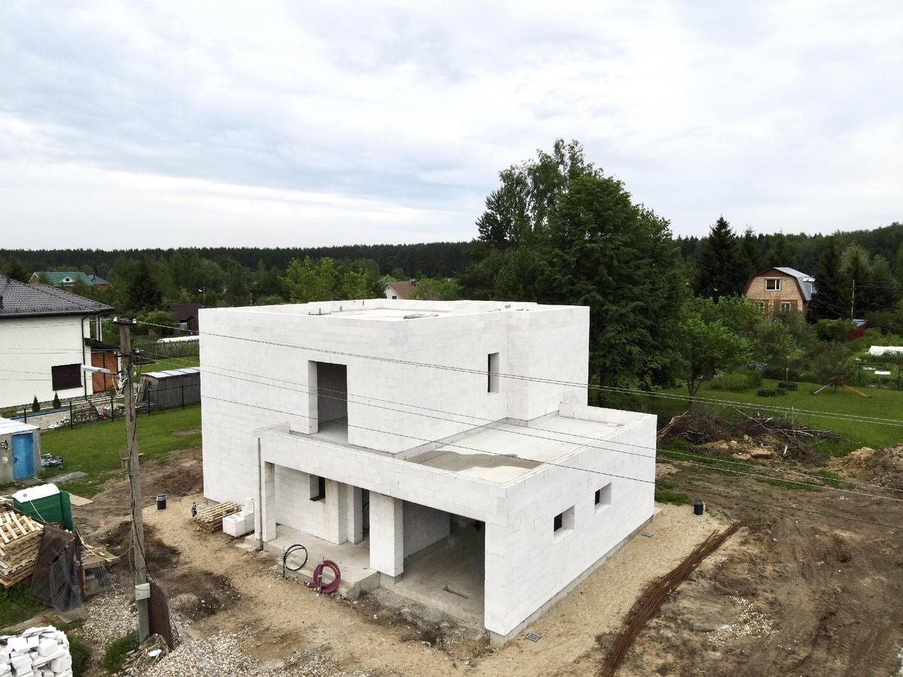

Вопрос, который слышим снова и снова: что лучше для кладки газобетонных блоков — пенополиуретановый клей или классический цементный. Однозначного правильного ответа нет — оба варианта рабочие, выбор зависит от бюджета, квалификации бригады и сроков.
Пенополиуретановый клей (ППУ)
Главное правило: горизонтальный шов в кладке на ППУ должен быть нулевым (0 мм). Блок ложится на блок «как на супер-клей». Вертикальные швы — 2–3 мм. Чтобы горизонтальный шов был нулевым, каждый ряд приходится шлифовать — требования к бригаде выше, нужны адекватные квалифицированные каменщики.
- Кладка теплее на 20–25% за счёт отсутствия мостиков холода.
- Работы идут быстрее на 10–15% — не нужно замешивать клей в ведре.
- Зимнее строительство: ППУ-клей не теряет свойств даже при −10 °C.
- Практически нет усадки — горизонтальный шов нулевой.
- Выше пластичность и трещиностойкость кладки.
- Очень прочная склейка: блок можно «приклеить» в дверном проёме, держится надёжно.
- Дороже примерно на 10–15% даже с учётом меньшего расхода.
- Высокие требования к геометрии блоков (чтобы меньше шлифовать).
- Нужна квалифицированная бригада с прямыми руками.

Часто слышим страх: «пена же разрушается от солнца». Все полимеры действительно разрушаются от прямого ультрафиолета — но в шов УФ не проникает, тем более в нулевой. Это не риск.
Классический цементный клей
Стандартный сухой клей в мешках — то, с чем большинство бригад работало всю жизнь.
- «Защита от дурака»: можно не шлифовать блок и использовать менее квалифицированную рабочую силу.
- Понятнее, надёжнее в простом сценарии.
- Дешевле на 10–15% относительно ППУ. На стандартный дом разница — около 10 тыс. рублей.
- Кладка холоднее — швы становятся мостиками холода.
- Качество кладки в среднем хуже.
- Работа медленнее.
- Ограниченность зимой — даже зимний клей при −10 °C теряет свойства.
- Усадка кладки больше.
- Трещиностойкость ниже.
Что выбрать
Если бюджет позволяет +10 тыс. рублей на дом и есть нормальная бригада — ППУ-клей. Дом получается теплее, кладка качественнее, сроки короче. Если бригада «как есть» или строите своими руками впервые — цементный клей проще и прощает больше ошибок.
На своих объектах мы используем ППУ-клей по умолчанию. Это входит в стандарт качества: однослойная стена D400 400 мм + ППУ-клей даёт тёплый контур, не требующий дополнительного утепления при газовом отоплении.
Типовые ошибки при кладке
- ППУ на блоки с плохой геометрией без шлифовки. Шов перестаёт быть нулевым, теплопотери растут — преимущество пены теряется.
- Цементный клей зимой при минусе. Прочность шва падает, весной могут пойти трещины.
- «Сэкономили» на бригаде для ППУ. Без квалифицированных рук кладка на ППУ хуже, чем на цементе.
- Толстый горизонтальный шов на цементе (8–10 мм). Мостики холода, увеличенная усадка, риск трещин по швам.
Что DOMGAZOBETON делает на своих объектах
За 10 лет работы и 300 построенных домов мы перепробовали оба варианта и остановились на ППУ-клее для всех объектов. Причины: меньше брака, теплее стена, короче сроки, возможность работать зимой. На Open Village 2025 и Urban 2025 показывали типовой дом 300 м² на ППУ-клее — фасад без трещин по швам, дом отапливается газом без дополнительного утепления. Наши проекты, как мы строим.
Частые вопросы
Что теплее — кладка на пену или на цементный клей?
Кладка на ППУ-клее примерно на 20–25% теплее за счёт нулевого горизонтального шва и отсутствия мостиков холода.
Можно ли класть газобетон в мороз?
На ППУ-клее — да, до −10 °C без потери свойств. Цементный клей даже зимний при −10 °C уже работает плохо.
Действительно ли пена разрушается от солнца?
Все полимеры разрушаются от прямого УФ. Но в шов между блоками ультрафиолет не проникает, особенно при нулевом шве. На срок службы кладки это не влияет.
Что выбрать новичку без опыта?
Цементный клей. Он прощает огрехи по геометрии и не требует шлифовки каждого ряда. ППУ имеет смысл, если работает квалифицированная бригада.
Источники
- НААГ — рекомендации по кладке автоклавного газобетона: gazo-beton.org.
- ТехноНИКОЛЬ — материалы по работе с газобетоном: tn.ru.
- ДОМ.РФ — рынок ИЖС: дом.рф.